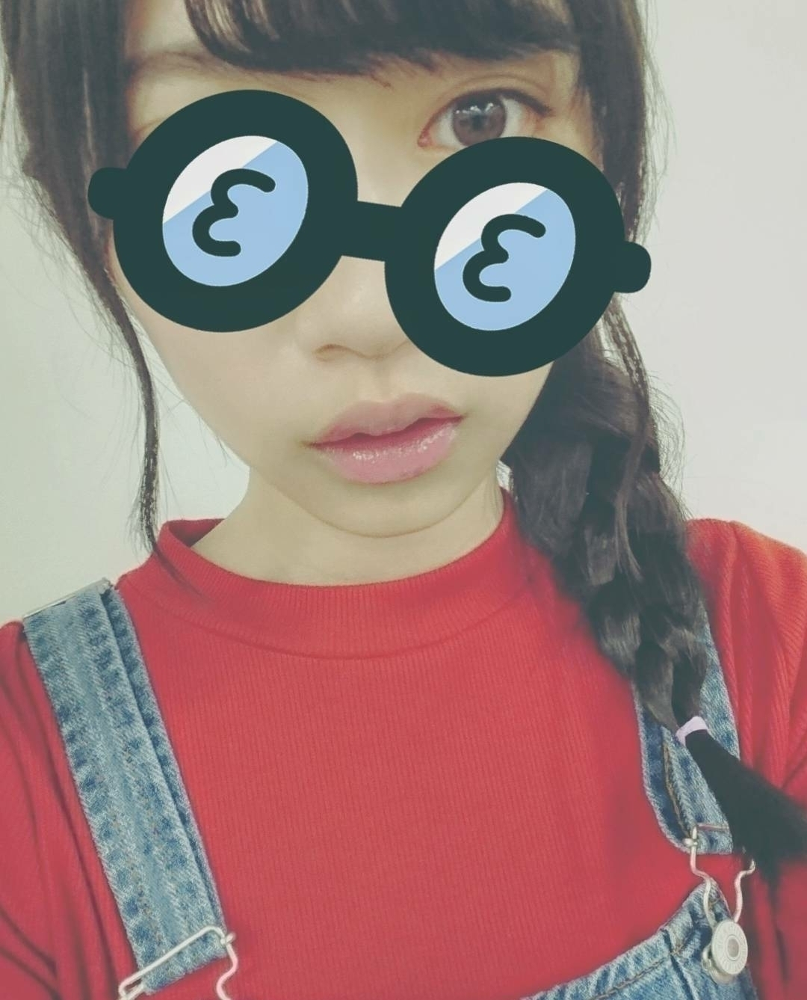
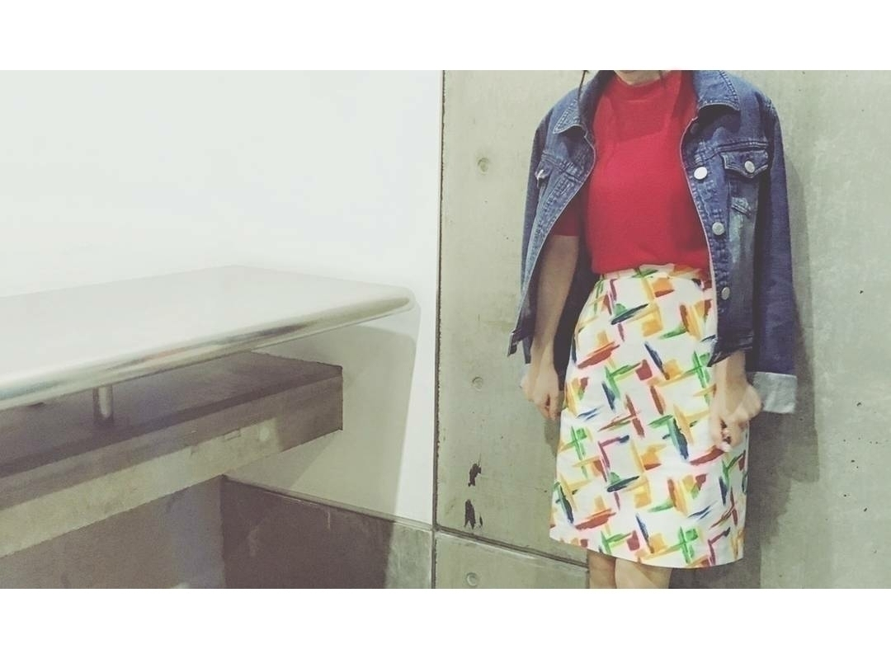

2016/0422Fri言ったみたい
おはようございます
こんにちは
こんばんは
寺田蘭世です
身長約155cm~156cm
靴のサイズ22,5cm
眼球フェチです
宜しくお願い致します✨
カメラアプリの凄さに
ちと、遅いのですが
気づいて最近ハマって
あれも面白いこれも面白い
って止まらないのです
そして、長押しすると動画になってしまうって事を
知りました
動画撮っても755やっていないので
こうなった
▶マークが付いてしまった
この後どうなったかは
ご想像にお任せいたします( ˙v˙ )
個別握手会
ありがとうございました
人生初の4部制は
とても楽しい時間でした( ´-`)

1部、2部
朝なのでラフな感じで
ゆるーっとカジュアルなお洋服を着てました
全身撮り忘れた
1部はサイド三つ編み
2部はくるりんぱヘアー
3部、4部

古着屋さんで買ったスカートにチェンジ
赤いトップスは着回しです
赤は何色にも似合うから
いいですねー
赤大好き( ´-`)
そして、スカートお気に入り

髪型は
3部、4部ともにポニーテール
4部はイヤリングを付けてみました！
握手会でイヤリング付けたの初めてかも！
好評で何よりでした！
4部制という事で
少しずつお洋服や髪型など
変えてみました( ´-`)
何より、楽しかったし
今までは1部だけとかで
時間的に来れなかった方も
4部なら来れるよーって方も多く
そして何より
ここまで一緒に歩いてきてくれてありがとうの気持ちでいっぱいです。
列が途切れて
誰も居なくて
1人で寂しく待っていたときもありました
もちろん、1部だけのときもありました
何回も心細くて折れそうになりました
隣のレーンは楽しそう
隣のレーンに並んでる方に手を振って、、、
嬉しかったけど
なんか悔しかったし
虚しかった
まだまだ上を目指したいし伸びしろはある
けど、まずは
本当にここまで一緒に
一喜一憂してくれた
ファンの皆様に感謝です
心の底から
ありがとう！
まだまだこれからです
らんぜの勢い止まらんぜ
このキャッチフレーズに恥じぬくらいになりたい
なります。

ありがとう
アイドルやらせてもらってて
良かったと心の底から思います。
2016/04/22 17:48


コメント(592)
らんぜも、独自の路線走り出したね
お洒落、応援してる。
蘭世自転車で走ったのかな？笑
このあいだの飛鳥とのお仕事はモデルのお仕事かな？
握手会行きたいぜぇ！
お仕事がんばってください！
早く怪我治りますように……！
もう、本当に可愛過ぎて夢中になっておりまする(~_~;)
これからも、いつまでも、らんぜの勢い止まらんぜ！！！
体調に気をつけながら頑張ってねp(^_^)q
じゃ*･゜ﾟ･*:.｡..｡.:*･'(*ﾟ▽ﾟ*)'･*:.｡. .｡.:*･゜ﾟ･*
こないだの1617日の握手会楽しかったです！
覚えてくれてたのかな？
覚えてくれてたら嬉しいです！
また次のシングルになっちゃうけど、
全握個握いくから待っててね！
後、バースデーライブも当たったから行くね！
らんぜの勢いがとまらんぜ！
どうも身長170センチ靴のサイズ26センチの手フェチのくろちょです(￣^￣)ゞ
京都でよろしくお願いします*\(^o^)/*
これからもよろしくね！
もうすぐ京都の握手会であえるの楽しみです！
ブログありがとう！！
こあくおつかれさま！
イヤリング俺も見てみたいです！！
またしてね°˖✧◝(⁰▿⁰)◜✧˖°
再生マークがついてたから思わず画面何回も叩いちゃったよ笑
またいっぱいそのカメラアプリで撮った画像ブログにのせてね
動画見てええええええ
さゆりんご軍団の755に載せちゃえ！笑
握手2日間楽しかったで♪
手紙書いたからそのうち受け取り行ってくれるとたすかる^^;
アンダラのこととかも書いたから！
マリオのコスプレセット買いに行けばよかったと後悔しましたおしまい。
あっ、アルバム1次から投げたで！
意識高いから←
京都の握手会までもう少しだ！
楽しみだな！
あつき
こちらこそありがとう！
蘭世はまだまだ大きくなる！
乃木坂のセンターになる存在だから！
これからも応援し続けるよ！
らんぜの勢いとまらんぜ！！
握手会お邪魔させてもらいました！
とても楽しかったです！
蘭世も楽しいって思えてたら幸いかなと...
初の4部制ってことで疲れてるのかなとも思ったけど、大丈夫だったかな？
長い間蘭世とお話する時間があるのはファンにとって嬉しいことだね♪
蘭世のキャッチフレーズを体現するためにも、ファンとして後押しさせてくださいd(>_・ )
一緒に坂を駆け上ろう！！
アルバムの握手会も行きます！
必ず券をとって行くから待っててくれると嬉しいな(((o(*ﾟ▽ﾟ*)o)))
では
これからも
蘭世の勢い、止まらんぜーーー
アンダーライブ出れないけど楽しんでますか？
全国ツアーで元気に踊る蘭世を楽しみに待ってるよ！
蘭世赤が似合うね٩(ˊᗜˋ*)و
古着興味あるけどなんか買う勇気が出ないというか…
蘭世的にオシャレのコツってなんだと思う？
蘭世の勢いはまだまだとまらんぜ!!
自信を持って胸を張ってアイドルやってください！
そんな蘭世が大好きです(ง ˙o˙)ว
関東の握手会行けたいけど僕は福岡県に在住してるから行くのが厳しいのです。
でも、京都握手会は僕に任せろ～！
って僕1人じゃ無理だけどｗ
僕も今現実の厳しさに苦しんでます！
お互い頑張っていこう！
優しいメンバー達ですね。でも、一番悔しかったのは蘭世自身ですよね。全国ツアーには、元気いっぱい飛び跳ねてる蘭世、琴子、れなちをみたいです。
お大事に…
もう寂しい思いさせないように支えますから( ･ㅂ･)و
名古屋の時も変化楽しみにしてるね( *ˊᗜˋ* )
蘭世も頑張ってね！
赤のニットよく似合ってますね！
モバメでみた時から可愛いな～って！笑
最後の寂しかった悲しかった思い出が
今の蘭世の強さになっているのかなと思いました。
もうこんな思いしたくないそう強くなったのかな？って
僕は今は色々と忙しい時期であまりに会いに行けないけど
アルバム握手買える日は買いたいと思います
今の蘭世を全力で応援する事しかいちファンとして推しとしてできないけどそれができる今がすごく僕は嬉しいのでこれからも階段、坂を上る蘭世の背中をおせていけたらいいなって思ってます。
いつでも何処でも応援しています。
これからもずっと応援してます。
ではまたコメントします
じゃあね～！
一緒に歩いて行くよ(^^)d
そういえば、さゆりんご軍団の監督って、どうがを撮る監督の意味だったんだね。
てっきり、全体をまとめる監督だと思ってたよ。
ブログ楽しみにしてるよーー
あと少しで名古屋の握手会ですね！
個握、全握2日とも行かしてもらいまーす
初握手会楽しみにしてまーす！
蘭世捻挫大丈夫かなーー？お大事にね！
らんぜのいきおいとまらんぜー
世界に蘭世を届けていこー
らんぜの勢い止まらんぜ！
センターになれるように、これからもずっと応援し続けます
蘭世ーーー！！
14枚目はちと忙しくてもう行けないけど、
15枚目は個握当てて行くよう！！
(￣^￣)ゞ
ファンの勢いも止まらんぜーーー‼︎
写真長押ししちゃったよ笑
更新ありがとう
蘭世のファッションすごく素敵だなっていつも思います！すごくかわいい！
そのスカート合わせ方ちょっと難しそうだけどすごく上手に着こなしてますね！
さすがです
握手会に関しては遠方で貧乏で病気持ちの僕はほとんど参加出来ません。そういう意味では蘭世に貢献できていないってことになるんだろうな・・・
申し訳ありません。
そんなダメダメなファンですが、蘭世を想う気持ちは誰にも負けないって信じています。
なんて言葉で言うのは簡単ですよね・・・
遠くで蘭世の活躍をいつも祈っていますね。
これからも応援してます(｡-_-｡)
ちなみに個握1〜4部当選してたよ〜^ ^
泣きました。
こちらこそありがとうm(_ _)m
これからも一緒に
坂駆け上がりましょう！！
この凄いキャッチフレーズに振り落とされないように、
全力で応援します(*｀ω´)b
蘭世は赤が似合う。
女性的でカッコイイと思います٩(ˊᗜˋ*)و
コメントする